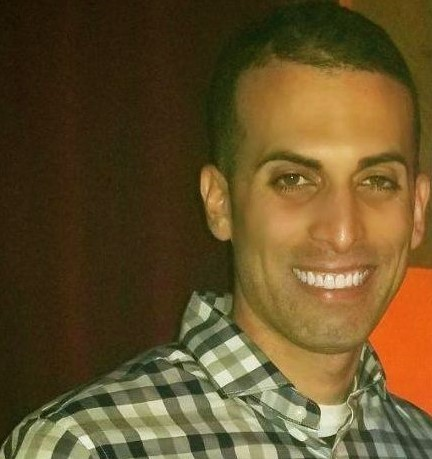

|  |
Jason PolancoMedical Technologist Toastmasters Public Speaker CEO of Asilverman United B.S. Florida Gulf Coast University Davie, FL 33324 I am new web developer, recently I took a course on HTML. This is my very first webpage. In addition, I hope this is the start of something big for me. Furthermore, I am exicted at the prospect of creating something this is all mine, there is not many jobs where you can create something that is yours. Link to:Contact info |
| Dates | Work | 2010-2013 | Lead Developer at Tempo App |
|---|---|
| 2010 | Researcher at Asilverman |
| IOS Development | ✨✨✨✨ |
| CSS | ★★ |
| Java | ★ |
| Bootstrap | ★ |